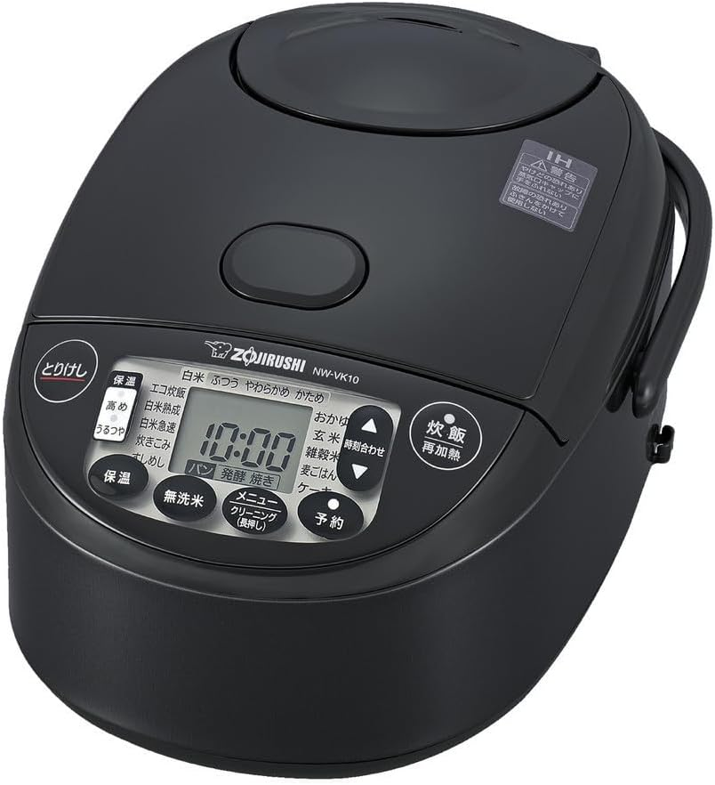

象印 炊飯器比較｜圧力IH（NW-YB10AM）vs IH（NW-VJ10）、「同じご飯」が別物になる理由
お米は同じ。水の量も同じ。なのにご飯の味が違う——その理由は、炊飯器の「方式」にある。


「圧力IH」と「IH」、何が違うのか
先に核心を言う。IHは「高火力で炊く」。圧力IHは「高火力＋高圧で炊く」。この「圧力」の一文字が、炊き上がりに根本的な差をつける。
通常の炊飯では、水は100℃で沸騰する。圧力IHは釜内を密閉して加圧することで、水の沸点を100℃以上に引き上げる。より高温の蒸気と水でお米を炊くため、でんぷんのアルファ化（糊化）が速く深く進む。結果として、お米の芯まで均一に熱が届き、ふっくら・もちもちした食感が生まれる。
同じ米・同じ水・同じ人が炊いても、炊飯器の方式が違えばご飯の味は変わる。これは体験して初めて実感できる事実だ。
スペック比較
| 項目 | NW-YB10AM 圧力IH・豪熱大火力 |
NW-VJ10 IH・極め炊き |
|---|---|---|
| 方式 | 圧力IH | IH |
| 炊飯量 | 5.5合 | 5.5合 |
| 価格帯 | 約3万円台 | 約1.8万円台 |
| 加熱機構 | 豪熱大火力（激しい対流） | 豪熱沸とうIH |
| 炊き分け | 炊き分け圧力3段階 （しゃっきり/ふつう/もちもち） |
白米3コース （かため/ふつう/やわらかめ） |
| 熟成炊き | 搭載（甘み成分約2.3倍） | 搭載（甘み成分約2.3倍） |
| 蒸気セーブ | 搭載 | 非搭載 |
| 保温 | うるつや保温30時間 | うるつや保温30時間 |
| スコア | 9.9 | 8.8 |
圧力IHの「本当のすごさ」を、3つの視点で語る
1. 炊き分け圧力が生む「食感の多様性」
NW-YB10AMの「炊き分け圧力」は単なる硬さの調整ではない。圧力の強さそのものを3段階で変えることで、お米の食感を根本から変える機能だ。
「もちもち」は高圧でお米に圧力をかけ、粒の外側を柔らかく仕上げる。お弁当のご飯として冷めてもおいしい。「しゃっきり」は低圧でお米を立たせ、粒感を残した歯ごたえのある仕上がりに。寿司やチャーハンに向く。「ふつう」はその中間。食べ方・料理に合わせてごはんの食感を選べる——この自由度は、通常のIHでは実現できない。IHの炊き分けはあくまで火加減の調整であり、圧力の有無による食感の差とは次元が異なる。
2. 豪熱大火力が起こす「激しい対流」の意味
NW-YB10AMが「豪熱大火力」と名付けているのは、釜内で激しい対流を起こすほどの火力があるからだ。水が激しく動くことで、釜の底から上まで均一に加熱される。お米の粒一つひとつが対流の中で動き続け、ムラなく炊き上がる。
NW-VJ10の「豪熱沸とうIH」も沸騰後に火力を落とさない優れた機構だが、圧力という制約がない分、対流の激しさと火力の上限でNW-YB10AMに軍配が上がる。釜の素材も同じ「黒まる厚釜1.7mm」を採用しているため、内釜で差はない。純粋に「圧力の有無」と「最大火力の差」が炊き上がりに出る。
3. 蒸気セーブ機能は「設置場所の自由度」を変える
NW-YB10AMには「蒸気セーブ」機能がある。炊飯時に発生する蒸気を本体内に戻し、外部への蒸気放出を大幅に抑える仕組みだ。炊飯器の上部や周囲が蒸気で湿りにくくなるため、食器棚の中や棚下への設置が可能になる。
NW-VJ10にはこの機能がない。蒸気が出る前提での設置が必要で、棚の中には置けない。キッチンの設置場所が限られる家庭では、この機能の有無が選択の決め手になる場合もある。
NW-VJ10が「正解」になる場面
NW-YB10AMを推しつつ、NW-VJ10が正解になるケースも正直に書く。
予算が限られている場合、NW-VJ10は約1.8万円台という価格で象印の「豪熱沸とうIH」技術を手に入れられる。ご飯がおいしく炊けることは保証されていて、30時間のうるつや保温・熟成炊き・白米3コース炊き分け・パン発酵・ケーキメニューまで搭載している。コスパ優先なら十分すぎる一台だ。
また、圧力IHのご飯が「もちもちしすぎる」と感じる人もいる。硬めのご飯が好きな人は、IHの炊き上がりの方が好みに合う場合がある。「ご飯は硬く炊きたい」という明確な好みがある人は、NW-VJ10のかためコースの方がフィットするかもしれない。
結論：どちらを選ぶか
🏆 NW-YB10AMを選ぶべき人
- ご飯をもっとおいしくしたい
- もちもち食感が好き
- 棚の中に炊飯器を設置したい
- 料理に合わせて食感を変えたい
- 長く使い続けるつもりがある
NW-VJ10を選ぶべき人
- 予算1万円台後半に抑えたい
- 硬めのご飯が好み
- 象印IHの実力で十分と考える
- まず炊飯器を試してみたい
1日1回以上ご飯を炊くなら、NW-YB10AMへの投資はすぐに体験として返ってくる。圧力IHのもちもちご飯を一度食べると、「この炊き上がりのためにお金を出した」という納得感が来る。ご飯への投資は、毎日の食事を変える一番コスパの高い家電投資だと思っている。